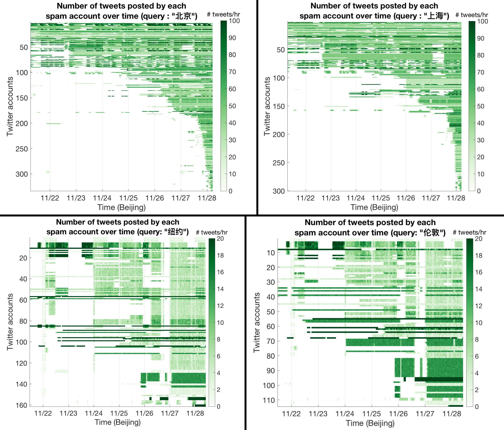

This essay is unfinished, but it is already interesting to read. I plan to grow this substantially as I find more examples and theories.
Introduction
There is a secret battle on the Internet – info-warfare. It is invisible like the battle for stock market arbitrage.
Every time you get an incomprehensible error message refusing to allow your account log-in for reasons they refuse to explain, every time a platform said your post contained something against its content policy without explaining which, every time the captcha gets an upgrade that makes it harder for you to solve… You have been hit by a stray bullet from the secret battle.
In the novel Blindsight (Watts 2017), after humans made first contact with an alien probe, it attacked after a long conversation. The humans interpreted that this way: The alien probe could not understand some of human speech, and concluded that it was an information object crafted specifically made to confuse it – an act of war.
Imagine you’re a scrambler.
Imagine you have intellect but no insight, agendas but no awareness. Your circuitry hums with strategies for survival and persistence, flexible, intelligent, even technological—but no other circuitry monitors it. You can think of anything, yet are conscious of nothing.
You can’t imagine such a being, can you? The term being doesn’t even seem to apply, in some fundamental way you can’t quite put your finger on.
Try.
Imagine that you encounter a signal. It is structured, and dense with information. It meets all the criteria of an intelligent transmission. Evolution and experience offer a variety of paths to follow, branch-points in the flowcharts that handle such input. Sometimes these signals come from conspecifics who have useful information to share, whose lives you’ll defend according to the rules of kin selection. Sometimes they come from competitors or predators or other inimical entities that must be avoided or destroyed; in those cases, the information may prove of significant tactical value. Some signals may even arise from entities which, while not kin, can still serve as allies or symbionts in mutually beneficial pursuits. You can derive appropriate responses for any of these eventualities, and many others.
You decode the signals, and stumble:
I had a great time. I really enjoyed him. Even if he cost twice as much as any other hooker in the dome—
To fully appreciate Kesey’s Quartet—
They hate us for our freedom—
Pay attention, now—
Understand.
There are no meaningful translations for these terms. They are needlessly recursive. They contain no usable intelligence, yet they are structured intelligently; there is no chance they could have arisen by chance.
The only explanation is that something has coded nonsense in a way that poses as a useful message; only after wasting time and effort does the deception becomes apparent. The signal functions to consume the resources of a recipient for zero payoff and reduced fitness. The signal is a virus.
Viruses do not arise from kin, symbionts, or other allies.
The signal is an attack.
Game theory and evolution
In game theory, information warfare would be studied as a kind of signaling game (Sobel 2020). We would explain how creatures actually use their symbols by assuming that they are playing a certain kind of game, then solve for the Nash equilibria. If there are only a few Nash equilibria, and those are the ones we observe, then we declare the theory a success.
Whereas in classical game theory, every agent is basically picking one strategy at a time to maximize its own utility, in evolutionary game theory, there are no agents. There are still individuals that fight or flee, but they no longer choose to. Each individual acts out its strategy until it dies without adapting.1 The population learns and adapts, and increases fitness of the individuals, but if we were to call the population an agent, it is an odd one. It plans by stochastic gradient ascent, and only increases the relative fitness, not absolute – which might not even exist.
1 More sophisticated evolutionary game theory would allow individuals that do adapt, learn, and calculate the optimal strategy. However, this quickly becomes intractable, and this level of generality is too powerful for this essay anyway.
For example, if the population can contain only three kinds of individuals, in a game of rock-paper-scissors, and only the winners can reproduce with very low mutation rates, then the population serenely turn around the length-3 cycle, chasing its tail, never increasing absolute fitness. Indeed, there is no absolute fitness, like how there is no absolute height in Escher’s staircase.
[The earth] breathes like a great lung; when it exhales, delicate and graceful life teems out of its pores, and all the creatures stretch out their arms to the sun; but when it takes in its breath, a rustle of fragile spirits breaking sweeps through the multitudes, and their corpses lash the ground like showers of hail. (Zapffe 2004)
Brains are survival engines, not truth detectors. If self-deception promotes fitness, the brain lies. Stops noticing – irrelevant things. Truth never matters. Only fitness. By now you don’t experience the world as it exists at all. You experience a simulation built from assumptions. Shortcuts. Lies. Whole species is agnosiac by default. (Watts 2017)
Consider the simplest case. Every round of interaction has two individuals. The interaction is symmetric (so there is no issue of “who goes first”). If I play \(s\) and you play \(t\), then my payoff from the interaction is \(\pi(s|t)\), and your payoff is \(\pi(t|s)\). In this simplified case, we say that \(s\) is…
- a Nash equilibrium iff for any other strategy \(s' \neq s\), we have \(\pi(s'|s) \leq \pi(s|s)\);
- an evolutionarily stable strategy (ESS) iff either \(\pi(s'|s) < \pi(s|s)\) or \(\pi(s'|s) = \pi(s|s)\) but \(\pi(s|s') > \pi(s'|s')\);
- a strict Nash equilibrium iff \(\pi(s'|s) < \pi(s|s)\).
Intuitively speaking, if you play the Nash equilibrium, you would be like “Why bother changing my strategy?”. If you play the strict Nash equilibrium, you would be like “I would be actively punished to change my strategy.”. The ESS is an interesting intermediate case where the first deviant might be fine, but the second deviant would be punished. This captures the idea of a stable population. It is not a matter of whether an individual might unilaterally want to change – individuals are not agents and have no desire at all. It is rather a matter of whether one kind of population could neutrally drift into another kind of population, or be actively replaced by an invasion of mutants.
Chinese
The Chinese government has a mature system for information warfare. It has four main components. I do not know how they are usually termed, so I will describe them in my own language.
- espionage: This component is a typical one. Most large governments have an intelligence agency whose job is to discover the secrets of foreign governments. Compared to the espionage of developed countries like America, Chinese espionage has a strong focus on industrial and technological espionage.
- state-level: This component is used to fight wars with other governments. For example, producing disinformation that confuses other national governments and citizens. During peacetime, this component can be used to degrade democracies.
- internal: This is the largest component in terms of the number of people employed.
- expat: This component has the main goal of maintaining support from the community of Chinese students and expats who are living abroad.
- foreigner: This component is the smallest and the least important. Its main goal is to create general support for the Chinese government among people who are not Chinese citizens or descendants. Its activities are mainly restricted to creating bland “cultural enrichment” videos.
This section discusses only the internal component. The foreign component is not different or more sophisticated from typical public relations campaign, and I know too little about espionage to write on that component. The expat component is very similar to the internal component, except that the Chinese government has to depend on local agents such as the Chinese Students and Scholars Association (Bowe 2018), and indirect threats, such as making visas difficult to obtain. In any case, the expat component is merely meant to support the internal component. It is my impression that the Chinese government cares little what the expats think about politics, as long as they do not turn Chinese people living inside China into heretics.
Internal operations
Internally, there are several types of operations (King, Pan, and Roberts 2017):
- Direct content silencing: As all Chinese websites and ISPs are registered with the local government, essentially any content on the Chinese Internet can be silenced at will by the Chinese government. This weapon can be as precise as disallowing replies to a single post for a limited period, or as blunt as deleting entire websites.
- Direct account silencing: As a simple extension of direct content silencing, any account can be silenced at will. This can be as precise as muting a single account for a week, or as blunt as deleting all accounts that has used hashtags from a list.
- The Great Firewall: The most famous of all. This blocks certain connections between the Chinese Internet and the external Internet.
- Noise injection: This is a blunt instrument. Like a cuttlefish injecting ink, people employed by the Chinese government or the social media websites post “noise” to dilute potentially dangerous information to a low level.
- Opinion guidance: This is a precise and subtle instrument used on particularly important topics.
The final goal is to maintain the stability of the regime, but it is too vague. For practice, it is translated to the instrumental goal of preventing mass action. “Mass action” means hundreds of citizens gathering and doing something political together. It can be a demonstration, a protest, a sit-in, a political speaking event, etc. It does not have to be pro- or anti-government. Indeed, even pro-government protests have been suppressed recently. The 2012 anti-Japanese protest was the last mass action acquiesced by the government. Since then, anti-Japanese protests have been suppressed, despite anti-Japanese sentiment being officially promoted as a patriotic duty.
Unlike what one might expect, the most common mass actions in China have nothing to do with democracy. Instead, they typically happen like this: Some people feel wronged by a corrupt low-level official, a bad merchant, or some other local bully. They find each other and walk to the local government, holding banners. Their goal is to be loud enough that a clean high-level official would see and hear them, and bring them justice.
For example, a common cause for mass action is when a local bank has failed. The people with bank accounts in it would stand in front of the bank holding banners and demand for the government to refund them. Another common cause is when a real estate company goes bankrupt. The people with half-developed apartments would stand in front of the gates of the estate and demand either a refund, or another development company to come in and continue the development. This has become a particularly acute problem through the 2010s, as land prices rose, and real estate companies depended increasingly on selling future housing units just to be able to fund current developments. This makes it a dangerous balancing act. If the company cannot sell off future housing units quickly, the development of current units would pause, scaring away potential buyers for future units, leading to a death spiral.
Direct content silencing
It is curious that on the Chinese internet, there is no lockpicking hobby. It is implicitly censored. Searching “lockpicking” or similar words would only pull up news police reports about people caught lockpicking criminally.
The Great Firewall
In simplified terms, The Great Firewall eavesdrops on packets sent above the TCP layer, and replaces them with the TCP Reset packet when it detects possibly censorable content, for instance, when the IP address matches one of Google’s many CDN server addresses. This ends the TCP connection between the client and the server. It is most often used to terminate connections between a client inside the Chinese Internet and a server outside the Chinese Internet, although it can also operate in the other direction. It can also perform other packet replacement than just a TCP Reset packet, as in the Great Cannon. (Marczak et al. 2015)
Noise injection
Despite the Great Firewall, some Chinese citizens would bypass it, and they may organize mass action on social media, such as Twitter, that are not controlled by the Chinese government. For this situation, the Chinese government can drown the signal in a flood of noise. A great example happened during the 2022 COVID-19 protests. To dampen the probability of mass action, the Chinese government awakened sleeper Twitter accounts that had been waiting for just such an emergency, and they spammed like mad under the tags relevant to the protest.
Numerous Chinese-language accounts, some dormant for months or years, came to life early Sunday and started spamming the service with links to escort services and other adult offerings alongside city names. The result: For hours, anyone searching for posts from those cities and using the Chinese names for the locations would see pages and pages of useless tweets instead of information about the daring protests as they escalated to include calls for Communist Party leaders to resign.
Twitter grapples with Chinese spam obscuring news of protests (Menn 2022)
Search for Beijing/Shanghai/other cities in Chinese on Twitter and you’ll mostly see ads for escorts/porn/gambling, drowning out legitimate search results. Data analysis in this thread suggests that there has been a significant uptick in these spam tweets. … They tweet at a high, steady rate throughout the day, suggesting automation. Then I looked at the number of tweets by each account over time. Interestingly, more than 70% of these spam accounts only started tweeting like crazy recently.
Twitter post by Air-Moving Device, (Air-Moving Device 2022b)
The same method shows that the great spamming cannon only fired at Beijing and Shanghai, not the other cities.

Precautionary deletion
UEBER DIE GROSSE MAUER ERREICHEN WIE ALLE ECKEN DER WELT
ACROSS THE GREAT WALL WE CAN REACH EVERY CORNER IN THE WORLD
— The first email out of China (1987-09-14).
A brief history of Chinese Internet:
- The year is 1995. Tsinghua students created a BBS forum. It came to symbolize the pre-2000 BBS era. During this period, most Chinese people have no personal computers, only students at top universities like Tsinghua would have use for the Internet.
- The year is 1998. The party began building the Great Firewall.
- The year is 2000. The first web portals has arisen. Yahoo, Sohu, Hao123, and Sina battled for Chinese dominance like their American counterparts of AOL, MSN, and Yahoo. Alibaba copied the success of eBay.
- It is the 2000s. Web 2.0 arrives. Baidu created the Tieba forums and the Wikipedia-like Baike, while Sina dominated the Chinese blog scene.
- The year is 2007. Xiaonei has rebranded itself as Renren, allowing the public in general to join. Like Facebook, it only allowed university students to join during its Xiaonei era. Unlike Facebook, its popularity quickly waned, slain by the mobile revolution.
- The year is 2010. The Great Firewall is operational. Blogspot, YouTube, Facebook, Twitter, and Google have been blocked, but that is fine, since inside there are copies with Chinese characteristics.
- The year is 2011. Tencent joined the mobile revolution by launching WeChat. Over time it would come to become the “everything app”, replacing large chunks of the Chinese Internet.
- The year is 2016. Douyin was launched. The world would know it as TikTok, and despair.
A brief anatomy of WeChat: WeChat is the “everything app” of China, and essentially makes up half of Chinese Internet. It was originally designed for one-to-one and group chats with text and images, but it kept including more functions. There are two types of accounts on WeChat: personal accounts and public accounts (公众号). All personal accounts must be registered by a phone number. Since every Chinese citizen can only register one phone number (by carrying their National ID card to an official registration station), this allows the state to match every personal account to a citizen, thus making humans accountable for their accounts and ending online anonymity. Public accounts can be registered by persons or organizations.
There are several ways to exchange information on WeChat:
- One-to-one chats between personal accounts.
- Group chats between personal accounts (群聊).
- Broadcast from a personal account to personal accounts who have friended them (发朋友圈).
- Broadcast from a public account to personal accounts who have subscribed to them (发公众号).
Out of these, the only kind of information that can be accessed outside of the WeChat system are article broadcasts from public accounts. These are published on https://mp.weixin.qq.com/ and accessible from the wide Internet, much like how blogs used to be. Notably, they do not allow comments, thus quashing potential seeds of public opinion formation. Blogs were alive and well in the early 2000s, but they were strangled by the rise of WeChat and censorship.
There is a low level of generic censorship on WeChat by fast and cheap algorithms, no more sophisticated by n-gram keyword matching, since anything more sophisticated is impractical. Overt censorship and public opinion monitoring is supplemented by instilling an instinct to self-censor. One-on-one chats are rarely censored more than this. At the next level, group chats and personal broadcasts are more likely to be censored, or reported by someone. The fear of being reported and earning a temporary or permanent ban instills a higher level of self-censorship. At the highest level, broadcasts from public accounts are all reviewed by an army of cheaply-paid censors, with offending content swiftly deleted. Note that cheaply-paid censors have become a legally mandated necessity for all websites and apps that have a lot of user-generated content, not just for WeChat.
The Mobile Revolution and its consequences have been a disaster for the AI race. If blogs are like libraries, and Renren is like the published diaries, then WeChat is like paper notes passed by students during classes, and Douyin is like face-to-face interaction. Data ephemeralizes into endless rushing rivers flowing from cameras to screens to visual cortices, depositing nothing but biochemical residuals diluted across a billion brains. The top streamer can say something now and on the next day there will be nothing but faint memories of it.
Since the ChatGPT-moment in 2022-12, Chinese companies started their own efforts in building LLMs, but they faced the problem of not having high-quality Chinese data. It was not just a Chinese problem, as even OpenAI had difficulty finding high-quality Chinese text data. In GPT-4o’s tokenizer o200k_base, there are many long Chinese phrases that got single tokens, as noted in Bias Alignment: Atypical Stereotypical Nationality Analysis (Henry Heng Luo, 2024-05-14). Of these, the longest 100 tokenized phrases are about gambling (like “daily lotto”, about 80%), porn videos (like “Japanese adult video”, about 10%), and political set-phrases (like “Socialism with Chinese characteristics”, 5%). See NSFW: GPT-4o Tokenizer (Han Lee, 2024-05-15) for a more detailed look.
On 2024-05-22, an article was publicly posted on WeChat by 何加盐, and it went viral before itself getting deleted. The author found that searching for “马云” (Jack Ma) for the period 1998-05-22 – 2005-05-22 resulted in precisely 1 result. It was shocking, since Jack Ma co-founded Alibaba in 1999 and rapidly rose to become the top e-commerce conglomerate in China. During the 2020-10 – 2021-01 period, he did not appear publicly, and there was a regulatory crackdown on his companies. While he is alive and free, with most of his personal fortunes intact, it was generally understood that he was forced into retirement, because the party did not want him to exercise his executive functions on his businesses anymore. So, the author hypothesized that perhaps it was just because Jack Ma was being targeted for censorship, but it turned out most things published on the Chinese Internet before 2010 had disappeared, including blogs, forums. A partial translation is on China Media Project.
The author gave several possible reasons:
- Chinese internet left the phase of private websites, forums, and blogs. The revenue of maintaining old websites drops year by year.
- The cost of maintaining old websites grows year by year, since there is always some probability that what used to be officially tolerated becomes intolerated.
- There is no Internet Archive made by Chinese citizen efforts. There probably is one by the Chinese government, since the Chinese governments have a long tradition of meticulous record-keeping (through even the depths of the Cultural Revolution), but official archives cannot be consulted by citizens.
In addition to disappearing content, there’s a broader problem: China’s internet is shrinking. There were 3.9 million websites in China in 2023, down more than a third from 5.3 million in 2017, according to the country’s internet regulator.
China has one billion internet users, or nearly one-fifth of the world’s online population. Yet the number of websites using Chinese language make up only 1.3 percent of the global total, down from 4.3 percent in 2013 — a 70 percent plunge over a decade, according to Web Technology Surveys, which tracks online use of top content languages.
… When my Weibo account was deleted in March 2021, I was saddened and angered. It had more than three million followers and thousands of posts recording my life and thoughts over a decade. Many of the posts were about current affairs, history or politics, but some were personal musings. I felt a part of my life had been carved away.
As China’s Internet Disappears, ‘We Lose Parts of Our Collective Memory’ (The New York Times, 2024-06-03).
Ironically, Twitter is probably the best source for gauging public opinion among Chinese urbanites. While not great, it’s better than all the other sources I know of. WeChat would of course be better, but WeChat cannot be scraped, except the public accounts which broadcasts content across subscribers.
Public opinion guidance
間 (Ma) is the Japanese term for negative space, the art of speaking with and listening for what is not there.
Imagine a space of political ideologies, such as the Political Compass. In an Internet without censorship, we can put a dot on each website espousing a position, and end up with a pointillistic landscape of the political Internet. Now imagine an all-powerful censor comes in and erases whatever it does not accept. It would leave behind a blotted painting. The censor did not paint a single point, but its eraser is a paintbrush too! Reading what is not said is the art of Ma.2
2 Gwern proposed a Chinese Censorship Audit. The idea is to compare the Chinese Wikipedia with a Chinese fork for overt erasures. Those are undeniable results of censorship.
Any opinion with an extensive following on the Chinese Internet is the negative space of censorship, and any opinion that should have a following online, but not, is the negative space of speech. This gives us four layers of Chinese opinions:
- Officially endorsed opinion, as declared in published documents. This includes items such as Xi Jinping Thought, anti-historical nihilism, etc.
- Officially allowed/tolerated opinion, the negative space of censorship.
- Officially disallowed/intolerated opinion, the negative space of speech.
- Officially forbidden opinion, as declared in published documents. This includes Historical Nihilism, Taiwan independence, etc.
The first and last items, being officially declared, are overt and easy to point to. The middle two items are by nature ambiguous and difficult to study. It is as if they are already camouflaged for the information battlefield. The use of these two negative spaces is an officially endorsed strategy, called “public opinion guidance” (舆论引导).
While on Twitter, Nazism might survive with heavy camouflage, it is not American official approval; yet on Weibo, Nazism survives with minor or no camouflage. This shows that Nazism is officially allowed, even though Fascism is officially forbidden.
In 2022, when Shizo Abe was assassinated, the Chinese internet erupted into cheers. Such cheers are only weakly balanced by those who want to respect the dead. While the cheers still remain online one year later (as a brief search of the hashtag #安倍已无生命体征# on Weibo on 2023-12-16 showed), subtle suggestions that a certain somebody else should be dead were swiftly suppressed within a day.
Zeng Ying was brutally trolled by Chinese netizens for sobbing while reporting live on Shinzo Abe’s assassination earlier this month. She was forced to apologize for being “unprofessional,” for “showing personal emotion on a public platform” and “hurting everyone’s feelings”.
Shinzo Abe death: Chinese journalist attempted suicide after being cyberbullied for emotional reportage (Muzaffar 2022)
External attacks
The Chinese government maintains its stability by targeting the information received by Chinese citizens. To do this, it mainly censors the Internet inside China, and produces noise outside, but occasionally, it directly attacks the outside.
Since 2015, the Chinese government has employed the Great Cannon multiple times to perform DDoS attacks on websites it wants to censor, such as a certain GitHub page hosting softwares for bypassing the Great Firewall.
The Great Cannon is a man-in-the-middle3 DDoS attack. When an external IP address requests for certain JavaScript files hosted on certain servers located inside the Great Firewall4, as the packet crosses the Great Firewall, a program makes a statistical decision. If the decision rule triggers, it replaces the innocuous JavaScript with a malicious JavaScript, which would rapidly send requests to a list of targeted servers. (Marczak et al. 2015)
3 mandarin-in-the-middle?
4 Typically, those are Baidu infrastructure servers that host commonly used analytics, social, or advertising scripts.
The two main parties in Taiwan are the DPP and the KMT. The older party, KMT, used to be pro-unification, with them being the unifier, not the CCP. It still is interested in eventual unification at some future date, probably after mainland China becomes democratic. In contrast, the DPP, being the newer party, is more interested in independence. During the 2000–2024 period, the KMT had 1 president and the DPP had 3, and the CCP had been significantly more hostile against the DPP presidents than against the KMT. Speaking from personal experience, the internal propaganda painted the DPP presidents as paper tigers with villainous faces, who would bring an apocalyptic war to Taiwan for a few votes.
During the lead-up to the 2024 Taiwanese presidential election, the Chinese government has used generative-AI to smear the pro-independence DPP candidate. (Hung and Hung 2022)
The key message being spread from the pro-China camp is that William Lai, the candidate from the DPP, is a dictator in the wings who will start a war with his reckless pursuit of Taiwanese independence. … Beijing-backed bots routinely flood the social media accounts of leading DPP candidates with pro-China propaganda.
“China has been actively waging cognitive warfare against Taiwan through disinformation,” Taiwan’s Premier Chen Chien-jen told the media in reference to how Beijing uses a mixture of economic coercion, military bluster and outright falsehoods to intimidate its neighbor. “Upon receiving the disinformation, local collaborators help disseminate and echo the message, in order to destabilize Taiwanese public sentiment and society.” … In December, a YouTube account called “Eat Rice, No War” put out a deepfake video alleging Lai had three mistresses, according to Taiwan’s Ministry of Justice. YouTube subsequently complied with a government request to remove the videos, and the rumor didn’t snowball into a campaign topic.
That followed a similar attempt to fake an audio file in which Ko Wen-je, the presidential candidate of the newly founded Taiwan People’s Party, mocked Lai for visiting the U.S. and “doing a job interview.” Taiwanese official investigators concluded that this was most likely a faked recording, and Ko said no such thing. (Lau 2024)
Analyzing more than 10,000 YouTube videos on a few channels since June, Johns Hopkins School of Advanced International Studies researcher Martin Wendiggensen found that “the DPP is almost always described negatively and mentioned in negative contexts (corruption, incompetence, stagnation) while the reverse is true for the KMT.” (Menn et al. 2024)
Corporate
Offensive
Among corporations, overt use of offensive information is rare now, as states have gradually consolidated its monopoly on violence. Towards customers, overt deception in advertisement is rare, although misdirection is common. Towards other corporations, overtly announcing deceptive information is possible, but not commonly employed. (Why?)
Platform
A platform is when the economic value of everybody that uses it, exceeds the value of the company that creates it. Then it’s a platform.
Social media are platforms, but there are other platforms as well. For example, ChatGPT is a platform, as people find even its free tier economically valuable.
Platforms must also deal with content censorship, but their kind of censorship is different.
Censorship by private institutions (companies, websites, etc) is very different from official censorship (Chinese, intelligence agency, etc). For private institutions, censorship has the main economic goals:
- remove spam. Spam is defined as content that the intended customers do not want to see. This can usually be done by automated filters. See email spam filters.
- Remove things that might harm the public image. That is, removing content that the non-customers do not want to see. This is usually harder to do right since there is a somewhat different economy.
- Spam producers focus on economies of scale. Their goal is massive scaling, like spawning billions of eggs just for a few to survive and make money. Most of the spam emails are patently unbelievable, but since spam is so cheap they can focus on just scaling up the traffic and wait for a few victims. This makes spam filtering easy, and more resembles defending against DDoS than against information war.
I was once blocked for over ten minutes on ChatGPT trying to debug a certain message. It turned out to be the word “dike”. What annoyed me the most is that the error message is completely uninformative. It merely told me that the message violated some policy with no further information. Why is it like that? It has a simple economic reason.
Suppose I were a spammer. I would simply try another spam message. For ChatGPT to provide any detailed feedback would only help my work. Suppose I were a non-spammer. I would probably try with more patience and found the offending word. I might curse it, but there is nothing I can do other than donating some money to its competitors.
Now suppose I were a reporter trying to write an incriminating report. I would be looking for the right kind of censorship. If the feedback message contains any detail that could help the bad actors bypass the censorship, I would be shocked and write about how this makes the censorship pointless.
The economic equilibrium in the second case is what you get: the company uses simple censoring methods that balance between protecting the public image and driving away customers. The result is usually simple filter lists for rare words. The customers grumble but don’t switch to a different platform, but instead make their own unscalable methods of trickery. All sides talk vapidly about “harm” and “responsibility” and other defensive non-informative information (what I call “bullshit camouflage”).
Defensive
When corporations practice defensive information war, they typically practice it in the form of bland speech.
I suspect the increasingly opaque error messages used by websites are not due to incompetence, or a mistaken attempt at being user-friendly, but a design choice, a deliberate defense in their escalating information warfare against spammers.
For example, I have found that in certain contexts, trying to use OAuth on my Google account would result in the one and only error message:
Sorry, something went wrong there. Try again.
What is that “something”? Why can’t Google provide any useful error message?
Some time ago, I attempted to buy a pepper spray on Amazon, and I simply could not get pass the age verification screen. Calling the customer service resulted in twenty minutes of wrangling with the website. It finally turned out that for some reason, the GUI on my end is different from the GUI on their end – presumably just a backend server bug. Whereas on their end, the presumably correct GUI asks for the driver’s license number as the only acceptable form of age verification, on my end I was able to use a passport number, which then the system rejected for not being a driver’s license number.
While this in itself is frustrating but at least reasonable – the Amazon website is vast and sprawling, and I understand enough about websites and programming to sympathize with the programmers who maintain it – I was greatly annoyed that the only error message is just Based on the ID number provided, we are unable to complete your order.
Sometimes, I help others access or solve problems with e-commerce websites from within China, such as Taobao or Tmall. This form of highly nondescript error message is also prevalent inside Chinese e-commerce websites, and as far as I can discern, is not caused by the Chinese-specific issue of censorship. Rather, they typically convey the message “According to our statistical analysis, you are sufficiently suspicious to trigger a statistical decision rule, but we won’t tell you what, because if you were a bad actor we would not want you to know which of the things you did was suspicious.”.
The convergence of behavior both inside and outside China suggests that it is not due to Chinese censorship, or lack thereof. It suggests that it is a common issue encountered by e-commerce, which suggests it is mostly intended to combat commercial spam.
Spammers are always attempting to bypass statistical detection of spammers, and on the other side, e-commerce websites are attempting to create statistical detectors of spammers. It is always a battle on the margin. For the e-commerce websites, the goal is not to stamp out spammers, or to ensure all legitimate users were accepted, but rather balance stamping out spammers, retaining legitimate users, and cost. The calculus of cost governs each aspect. In the equilibrium state, they occasionally ban legitimate users and then handle a fraction of those with manual interview. Each legitimate user grumbles but mostly acquiesces. Similarly, the marginal cost of losing a spam account is smaller than the marginal cost of going through a manual interview, so spammers would just open another account than go through the manual interview.
Regulatory
Banks, like e-commerce websites, often have vague nondescript error messages as well. However, banks are typically less worried about spammers than about money-laundry and government regulations. In this case, it is still defensive information, but not against spammers, but against the possibility of leaking sensitive information.
In the specific case of “Why did the bank close my account, seemingly for no reason? Why will no one tell me anything about this? Why will no one take responsibility?”, the answer is frequently that the bank is following the law. … [Suspicious Activity Reports] can (and sometimes must!) be filed for innocuous reasons and do not necessarily imply any sort of wrongdoing.
If the United States brings its subpoena power to bear against a bank teller and asks them about a SAR, they’re supposed to say nothing. That is the law… to avoid constantly violating this, Compliance at most functioning institutions has long-since decided that SARs will live in their own walled garden of a subsystem … If, for example, a SAR is misfiled because that subsystem doesn’t share the same view of account ownership as another part of the overall system, investigating that problem might require telling the customer that they were investigated, which you cannot do. And because this is insufficiently Kafkaesque, at some financial institutions, you can get a SAR filed for knowing what a SAR is, because “advanced knowledge of anti-moneylaundering procedure” is a characteristic only of financial professionals and terrorists.
Fictional
In fiction, there have been cases of “cognitohazard”. However, their purported effects are much more overt than the somewhat subtle effects described in the essay. Whereas the information objects described in the essay redirect, confuse, camouflage, and waste the opponents’ time, cognitohazards typically directly destroy the information-processing hardware of the opponents. In general, cognitohazards differ from the other examples, because they operate by breaking the abstraction layer. They are digital operations that causes analog operations that destroy the hardware. On the digital layer, the underlying hardware is assumed to be always there, like air before the discovery of vacuum. Cognitohazards pull out the air of the digital world and exposes the vacuum, destroying digital life in the process.
The short story BLIT (Langford 1999) is a common reference point for speculations on cognitohazards, although the namesake of BLIT itself does not break the software-hardware abstraction barrier, and therefore is not a cognitohazard according to our definition. In the story, a human mind is a software running on a brain-hardware, and upon “Gödelian shock inputs”5, the software falls into “vicious circles” from which it cannot recover to a working state, although the hardware seems to remain just fine. Many BLITs were discovered, with the first one resembling a fractal parrot.6
5 The story does not elaborate, but it is common knowledge among mathematical logicians that anything powerful enough for Peano arithmetics is powerful enough to be hacked. For example, (Dowling 1989) is a one-page proof that shows that “no program can both test its input for the presence of a virus and simultaneously be guaranteed not to spread a virus itself”, by translating this statement into math, then quote Rice’s theorem. The same argument can be used to show that “Gödelian shock inputs” must exist, assuming that human minds are softwares that can process arbitrary formulas in Peano arithmetics.
6… so called because its outline, when processed for non-hazardous viewing, is generally considered to resemble that of the bird. A processed (anamorphically elongated) partial image appears in Appendix 3 of this report, page A3-ii. THE STATED PAGE MUST NOT BE VIEWED THROUGH ANY FORM OF CYLINDRICAL LENS. PROLONGED VIEWING IS STRONGLY DISRECOMMENDED. PLEASE READ PAGE A3-i BEFORE PROCEEDING.
2-6. This first example of the Berryman Logical Image Technique (hence the usual acronym BLIT) evolved from AI work at the Cambridge IV supercomputer facility, now discontinued. V.Berryman and C.M.Turner [3] hypothesized that pattern-recognition programs of sufficient complexity might be vulnerable to “Gödelian shock input” in the form of data incompatible with internal representation. Berryman went further and suggested that the existence of such a potential input was a logical necessity …
Real-life analogs of cognitohazards are extremely rare, and their status as “cognitohazards” is controversial. Nevertheless, here are some possible analogs.
The McCollough effect shows that visual perception can be modified for up to 3 months with just a few minutes of visual stimulus. There have been several explanations, but none is satisfactory. They however all share the common idea that the visual stimulus itself changes the neurons in the low-level of perception.
Badly designed digital computers, such as the Zuse Z1 or Commodore PET, can suffer from the “killer poke”.
Other than cognitohazards, the SCP world contains examples of anti-memetics, which are information objects that are hard to remember and reason about. They are not cognitohazards, but are rather camouflaged information.
Argument
An argument can be thought of as a game of wits and rhetorics, structured like a tennis game. Two sides stand facing each other, and hit the “point of the argument” back and forth. When one side finally “drops the ball”, the other side wins the point. When seen this way, many puzzling aspects of argument games turns clear.
Let’s start with the simplest problem: Why is it that people have an urge to “have the last say”? To not drop the ball. If one side makes an argument, and the other does not offer a counter-argument, the round is assumed to be over and the first side won. If argument games are used to discover truths, this can get rather strange.
The algorithmic fairness controversy
In 2019, I looked into the controversy over “algorithmic fairness” of the Northpointe COMPAS, which I explained in The Racial Algorithmic Bias Controversy. What was curious about the controversy is that neither side did it the way I would have done it. I would have just written out the simple mathematical model, then argued about which measure to choose. Instead, the actual controversy went like this:
- ProPublica wrote a long article, putting in a lot of human faces for pathos.
- Northpointe replied tersely that the COMPAS system has good statistical properties.
- ProPublica replied with such detailed statistical arguments that I can only characterize as “statistical spam”.
And here, the game stood. Who “won”? From my point of view, both sides missed the point completely and the whole game was moot. In fact I would rank ProPublica much lower than Northpointe for first using pathos, then using statistical spam. However, from a tennis game model of argument, ProPublica won, because Northpointe dropped the ball. Statistical spam is bad for discovering the truth, but a good play, because it is hard to counter-argue statistical spam. To the onlookers, they can use the controversy to have their own argument games, which would go as follows:
- A: “Haven’t you heard of the algorithmic bias?”
- B: “Yes, but Northpointe made a counter-argument.”
- A: “Well, ProPublica have shown that the counter-argument was statistically moot.”
- And at that point, person B would have to admit defeat, or attempt to actually parsing the statistical spam and then give up out of frustration, or dismiss the ProPublica statistical spam as irrelevant.
In my view, dismissing outright the ProPublica statistical spam is the right move, but it is going against the human intuition that whoever has the last say in an argument is in the right. People intuitively disdain “dismissing the last move” as childish cheating, much as shouting “That doesn’t count!” in a tennis game.
Continental philosophy
[Bertrand Russell] thinks I am muddleheaded; but then I think he is simpleminded.
— Alfred North Whitehead
Continental philosophy presents another example of information warfare. The very definition of continental philosophy is tricky, especially if you want to respect the wishes of continental philosophers, who simultaneously want to build a coherent movement and want to reject all attempts at pigeonholing as inherently dehumanizing. To keep this section meaningful, we will disrespect their wishes.
To begin, consider the infamous passage “God is a Lobster”:
Challenger quoted a sentence he said he came across in a geology textbook. He said we needed to learn it by heart because we would only be in a position to understand it later on: “A surface of stratification is a more compact plane of consistency lying between two layers.” The layers are the strata. They come at least in pairs, one serving as substratum for the other. The surface of stratification is a machinic assemblage distinct from the strata. The assemblage is between two layers, between two strata; on one side it faces the strata (in this direction, the assemblage is an inter stratum), but the other side faces something else, the body without organs or plane of consistency (here, it is a metastratum). In effect, the body without organs is itself the plane of consistency, which becomes compact or thickens at the level of the strata.
God is a Lobster, or a double pincer, a double bind. Not only do strata come at least in pairs, but in a different way each stratum is double (it itself has several layers). Each stratum exhibits phenomena constitutive of double articulation. Articulate twice, B-A, BA. This is not at all to say that the strata speak or are language based. Double articulation is so extremely variable that we cannot begin with a general model, only a relatively simple case. The first articulation chooses or deducts, from unstable particle-flows, metastable molecular or quasi-molecular units (substances) upon which it imposes a statistical order of connections and successions (forms). (Deleuze and Guattari 1987, chap. 3)
A mathematician might look at this passage, and, if not immediately dismissing it as word salad, start writing down equations like
\[ \exists G : G \in \text{Lobster}, \exists P : \text{isPincers}(G, P), \exists B, A: P = BAAB, \dots. \]
They would then attempt to define an algebraic structure – call it \(L\)-sequences, \(L\) for “lobster” – and try to construct examples of \(L\)-sequences. Deleuze and Guattari never made such an attempt.
One of the fundamental tasks of the State is to striate the space over which it reigns, or to utilize smooth spaces as a means of communication in the service of striated space. It is a vital concern of every State not only to vanquish nomadism but to control migrations and, more generally, to establish a zone of rights over an entire “exterior,” over all of the flows traversing the ecumenon. (Deleuze and Guattari 1987, 385)
Torrents of noise flood the world every second. Continental philosophy is not noise, even if they resemble noise. Why do they exist? Why do people write them, and why do people transmit them?
There are no meaningful translations for these terms. They are needlessly recursive. They contain no usable intelligence, yet they are structured intelligently; there is no chance they could have arisen by chance.
I explain them as information objects with three aspects: the literal text, the actual practical use, and the rhetorical game mechanics.
The literal text of continental philosophy is typically made of complex sentences, and filled with allusions to past literature, word-plays, puns, neologisms, and foreign words. To interpret them coherently, you need concentration, patience, and to have read the prerequisite texts. Consequently, such texts allow those few readers who can actually interpret them coherently a lot of bragging rights and all the pleasures of being in a society of esoteric wisdom. One can get a distinct feeling of this by going into the local university’s philosophy department and eavesdrop on their late-night discussions, or going to an online forum of continental philosophy.
However, if they are merely hard to understand, they would not have more followers than modern set theory, which is equally complex and arcane:
Theorem 44: The generic mantle of \(V\) is a definable transitive class in \(V\), containing all ordinals, invariant under set forcing, and a model of the ZF axioms of set theory.
Proof: The generic mantle is a definable transitive class containing all ordinals and closed under the Gödel operations, because it is the intersection of the generic grounds, each of which has those closure properties in the corresponding extension of \(V\). So by Fact 10, in order to show that \(gM\) is an inner model, it remains to show merely that it is almost universal, which we do below… (Fuchs, Hamkins, and Reitz 2015)
Even a complete outsider to mathematics could quickly understand naive set theory, with an hour of tutorial on drawing circles and dots and Venn diagrams. Modern set theory, while a vast complication over the simple picture of Venn diagrams, is not different in kind. If the outsider looks at the paper on set-theoretic geology and asks “But what does it have to do with geology?”, I can reply simply, “It is a one-way analogy. Set theorists noticed that they can start with ZF set theory and add the Axiom of Choice to get ZFC set theory, then add ZFC-consistency to get an even bigger set theory, and so on. So they thought ‘What if we went the other way? Going down instead of up?’ So they tried making smaller set theories below ZF set theory, and smaller, and smaller, all the way down the ‘mantle’ and below.”
There we go, I have explained set-theoretic geology. Reading it, everyone can see that set-theoretic geology has no relevance to actual geology, anymore than the Conway’s Game of Life has relevance to actual biology.
In comparison, continental philosophy is designed to look as if they talk about general practical issues, such as economics, justice, the meaning of life, happiness, God (which is a lobster), and more.
Finally, continental philosophy occupies a particular niche in the game of rhetorics that allows it to reproduce itself socially.
Since its language is vague and suggestive, it seems relevant to any field, and so it can just walk into any tennis court uninvited and make an opening move. Since its language is dense and hard to distinguish from noise, the others might just ignore it, allowing it to declare victory by default. If someone responds, then the real fun begins.
| objection | response |
|---|---|
| This is irrelevant. | This problem is relevant to real people’s real lives. |
| This philosophical argument is irrelevant to the real problem. | (Quote someone like the Frankfurt School.) |
| We do not talk about this topic in this style. | Open yourself to the challenges of alterity, lest you impose hegemonic reason. |
| Speak more simply. | Speaking simply is reductionistic. The real world is complex. |
| [points at quote] This is technically wrong. | You have misunderstood what the authors are really saying. Engage with the source respectfully instead of quoting them out of context. |
By repeatedly butting into any fashionable controversy of the day, continental philosophy keeps itself from falling into oblivion like modern set theory. By not losing the rhetorical game, it keeps itself from being debunked like old quantum theory. However, to complete its social reproduction, continental philosophy still has to protect itself from challenges from within.
Euclid’s Elements was a compilation and cleaning-up of geometry books that came before it. It was of such fine quality that it destroyed the works upon which it was based.7 Back then, books were expensive and required frequent copying by hand. Faced with a choice between copying Euclid’s Elements or the books that it obsoleted, the ancients chose to copy Euclid instead of the previous works that were of historical interest only, historical interest that the ancients could not afford.
7 This is a cartoon sketch. The actual textual history of Euclid’s Elements is studied only by historians of mathematics. Working mathematicians typically hold it at a respectful distance and actively try not to not get too close to it, since an accurate view of the history of mathematics is harmful to the actual practice of mathematics (I speak from personal experience), because the real history of mathematics is not a mathematical textbook written for its educational content. History of mathematics is useful only as a carefully sketched cartoon, omitting almost all the real details, and completely violating historical truth sometimes, because some truths are not adaptive.
To reproduce itself, continental philosophy must keep itself from being explained or clarified, especially by insiders. To educate new continental philosophers, the old continental philosophers would write simple explainers and summaries, like The Edinburgh Dictionary of Continental Philosophy. However, such reference books risk becoming substitutes for the original source material, starting a slippery slope into clarity.
To ensure its continued survival, Continental Philosophy must keep itself confusing, that is, the old confusions must remain forever confusing. So it developed an immune system that quickly destroys clarification attempts, called “textual deference”. You may recognize its antibodies such as “respect for source material”, “close reading”, “there is no substitute for reading the masters”, “that’s an oversimplification”, “that is not what X meant, but only what Y interpreted X to mean”, and so on. (Smith 1991)
To throw such textual deference into stark relief, consider how scientists treat their history. Working scientists have only the most cartoonish knowledge of the history of their fields. Classical papers are rarely read, except in fields so immature that they do not have good textbooks yet and the only way to proceed is reading the original papers. In fact, one can measure the maturity of a field by the ignorance of its practitioners about its original sources, and the lack of bibliography in textbooks. A textbook on electrodynamics does not refer to Coulomb or Maxwell’s original books. A course in relativity does not attempt to explicate the original papers by Einstein. The original sources are typically fumbling and barely comprehensible, a target for improvement, then swiftly relegated to mere history.
How does continental philosophy protect itself from progress? The easiest method is to simply declare some sources as original and all else derivative, to freeze the great canonical works for all times. However, this is not sustainable, as new philosophers are not content to merely read the great canons, but want their own chance at joining the great canons. Thus we arrive at the tradition of “the Great Conversation”:
What binds the authors together in an intellectual community is the great conversation in which they are engaged. In the works that come later in the sequence of years, we find authors listening to what their predecessors have had to say about this idea or that, this topic or that. They not only harken to the thought of their predecessors, they also respond to it by commenting on it in a variety of ways. (Adler 1990, 28)
With the Great Conversation, continental philosophy reproduces itself. The old master texts remain inscrutable. New inscrutable texts are added to the canon. New texts that are too clear or sensible are denounced as derivative, analytical, reductionistic, or perhaps kitsch, and denied entrance to the canon. Continental philosophy reproduces itself socially, somehow piling higher and deeper but never making a single bit of progress.